Web de listados de CSV (RFIG)
Manual de navegación: consulta de versiones, comparador, gráficas, histórico y seguimiento de la instalación
1. Introducción
La web de listados de CSV publica cada semana el listado global de CSVs (fijas y temporales) y permite consultar su evolución y el seguimiento de la instalación de las balizas L1X. Está en https://asfadigital.github.io/csv/ y se abre con cualquier navegador actual (Edge, Chrome o Firefox); no hace falta instalar nada.
La web tiene dos tipos de páginas:
| Página principal | Reúne todas las versiones publicadas y tiene cuatro pestañas: Versiones Comparador Gráficas Histórico |
| Página de cada semana | El listado completo de CSVs de una versión, con filtros, búsqueda, datos de instalación de cada CSV y progreso de la instalación. |
Las capturas de este manual están tomadas con las versiones publicadas de V.15.2026 a V.46.2026. Pulse cualquier captura para verla a tamaño completo.
2. Pestaña Versiones
Es la pestaña que se muestra al abrir la página principal. Lista todas las versiones publicadas, de la más reciente a la más antigua. La última está destacada con la etiqueta ÚLTIMA ACTUALIZACIÓN.
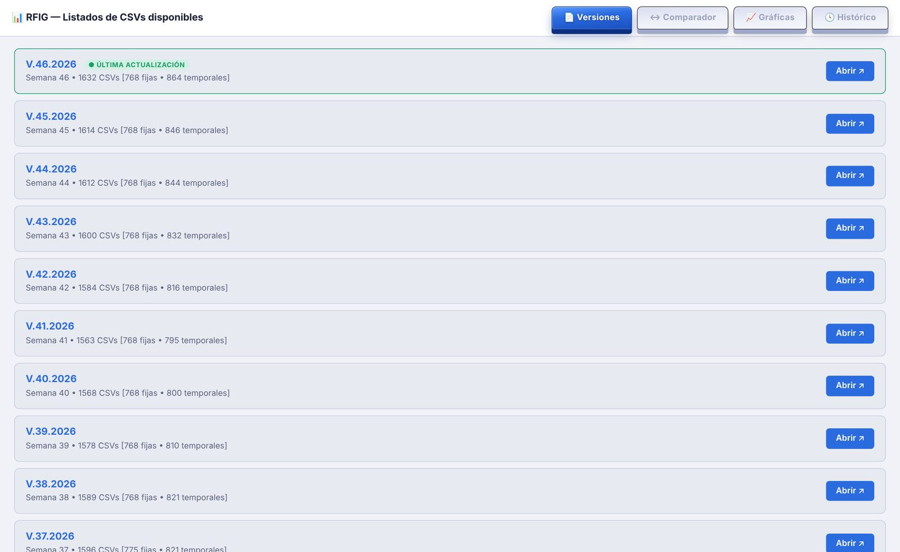
Para cada versión se indica la semana y el número de CSVs, con el desglose de fijas y temporales. El botón Abrir abre la página de esa semana en otra pestaña del navegador (sección 6).
Para cambiar de pestaña, pulse su nombre en la parte superior derecha: Versiones, Comparador, Gráficas o Histórico.
3. Pestaña Comparador
Compara dos versiones cualesquiera y muestra las CSVs que aparecen (altas), las que desaparecen (bajas) y las que han cambiado algún dato (modificaciones).
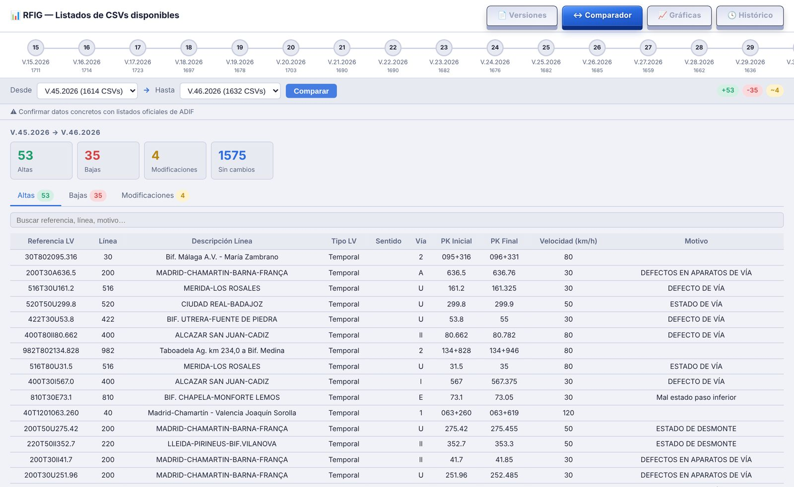
Elegir las versiones
Hay dos formas de elegir las versiones que se comparan:
| Desplegables Desde y Hasta | Elija las dos versiones y pulse Comparar. Al abrir la pestaña vienen seleccionadas las dos últimas versiones. |
| Línea de tiempo | La fila de círculos de la parte superior representa las versiones, con su número de CSVs debajo. Pulse una versión para fijarla como origen y después otra para fijarla como destino; la comparación se hace sola al pulsar la segunda. |
Resultado
| Tarjetas de resumen | Número de altas, bajas, modificaciones y CSVs sin cambios. Las mismas cifras aparecen en pequeño a la derecha de la barra de selección. |
| Pestañas Altas, Bajas y Modificaciones | Cada una lista sus CSVs. En Modificaciones se muestra, para cada dato que ha cambiado, el valor anterior tachado en rojo y el nuevo en verde. |
| Buscador | El cuadro «Buscar referencia, línea, motivo...» filtra la lista de la pestaña activa. |
Cómo se cuenta
La comparación se hace fila a fila, de modo que las altas menos las bajas coinciden siempre con la variación del número de CSVs entre las dos versiones. La Referencia LV se forma con la línea, el tipo (T o F), la velocidad, el sentido, la vía y el PK inicial, y puede repetirse en LTV distintas (por ejemplo, dos LTV del mismo tramo con distinto horario). En ese caso, sus filas se ordenan por ID PDF LTV y, a partir de la segunda, se muestran como «REFERENCIA (2ª)», «REFERENCIA (3ª)», etc.
4. Pestaña Gráficas
Tiene dos gráficas: la evolución del número de CSVs y las altas y bajas entre versiones.
Gráfica de evolución
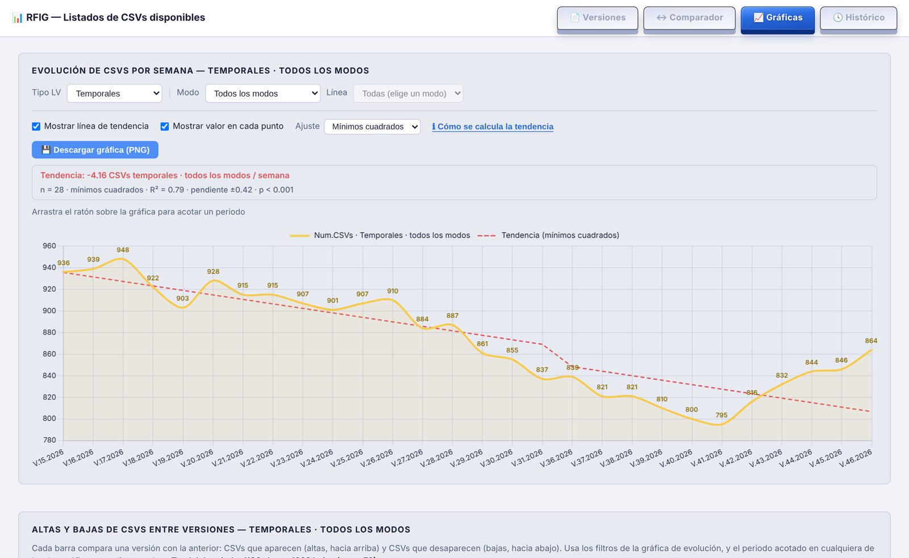
| Filtros | Tipo LV (temporales, fijas o ambas), Modo (CONV, AV, RAM) y Línea. Para elegir una línea hay que elegir antes un modo. Los desplegables solo ofrecen los modos y líneas con CSVs del Tipo LV elegido. |
| Mostrar línea de tendencia | Dibuja la recta que mejor se ajusta a la serie. Encima de la gráfica, el recuadro rojo indica la pendiente (CSVs por semana) y los indicadores de ajuste. |
| Ajuste | Método de cálculo de la tendencia, Mínimos cuadrados o Theil-Sen. Theil-Sen es menos sensible a semanas con valores atípicos. |
| Cómo se calcula la tendencia | Abre una ventana que explica los dos métodos y los indicadores. |
| Mostrar valor en cada punto | Escribe el número de CSVs sobre cada versión. |
| Descargar gráfica (PNG) | Guarda la gráfica como imagen, con su título. |
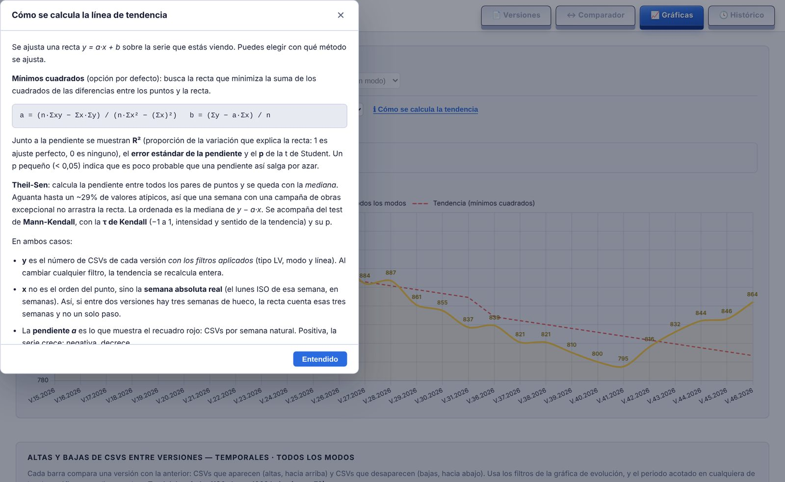
Acotar un periodo
Para ver solo una parte de la serie, pulse sobre la gráfica y arrastre el ratón hasta el final del periodo. Mientras se arrastra, el periodo se marca en azul.
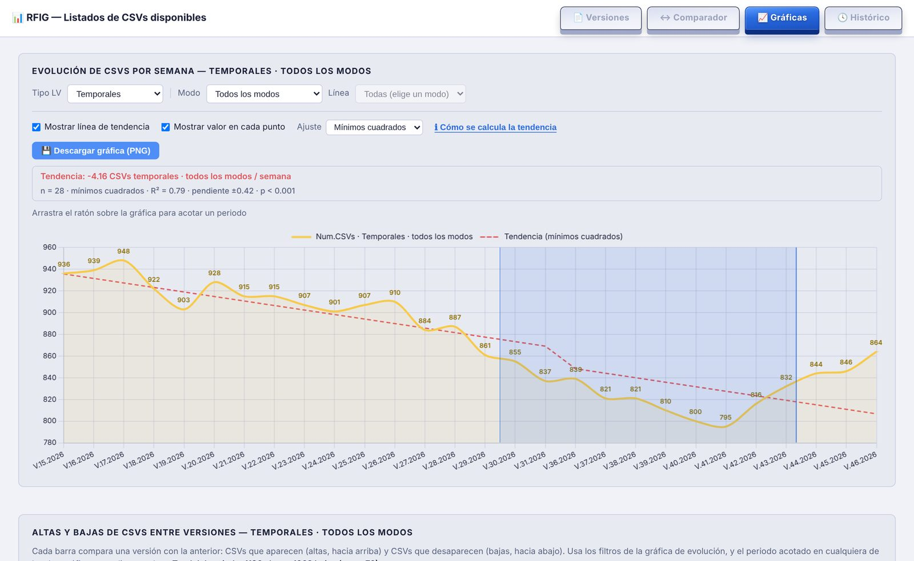
Al soltar, la gráfica muestra solo ese periodo y la tendencia se recalcula con sus versiones. Encima de la gráfica se indica el periodo acotado. Para volver a ver toda la serie, pulse Ver todo el periodo o haga doble clic sobre la gráfica.
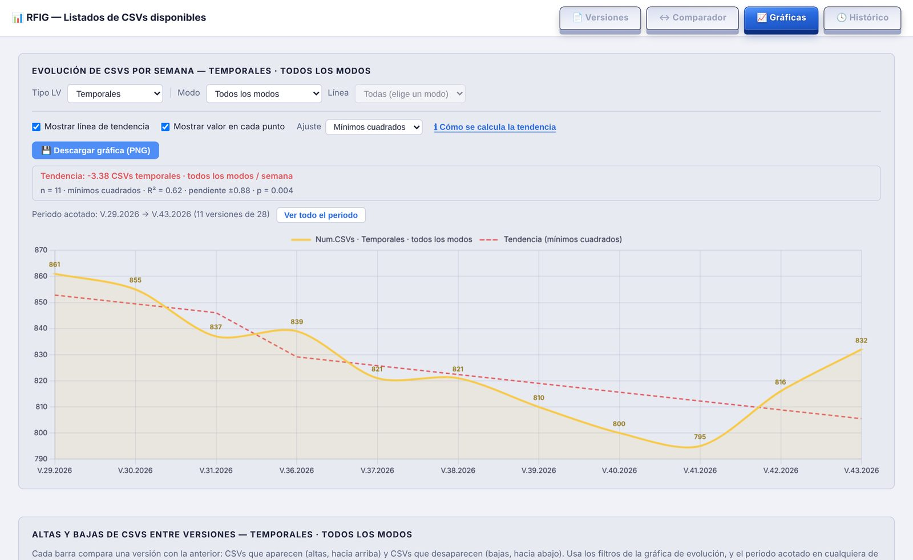
El periodo acotado se aplica también a la gráfica de altas y bajas, y se puede acotar igualmente desde ella.
Gráfica de altas y bajas entre versiones
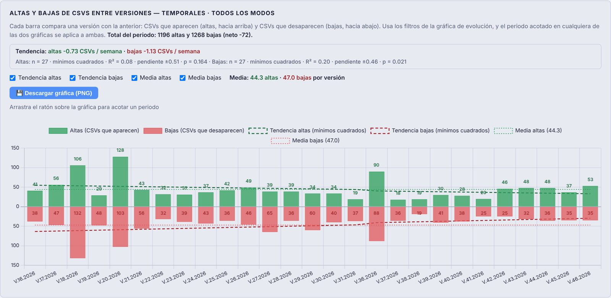
| Barras | Para cada versión, las CSVs que aparecen respecto a la versión anterior (verdes, hacia arriba) y las que desaparecen (rojas, hacia abajo). Al pasar el ratón se ven las dos versiones comparadas y la variación neta. |
| Total del periodo | Encima de la gráfica, la suma de altas y bajas del periodo visible y el saldo neto. |
| Casillas Tendencia altas, Tendencia bajas, Media altas y Media bajas | Muestran u ocultan cada línea. Al abrir la página, las medias están activadas y las tendencias desactivadas. Las medias son la media de altas y de bajas por versión en el periodo visible. Las tendencias usan el método de ajuste elegido en la primera gráfica, y su pendiente se indica encima de la gráfica. |
| Filtros | Usa los mismos filtros de Tipo LV, modo y línea que la gráfica de evolución. |
| Descargar gráfica (PNG) | Guarda la gráfica con su título, el total, las tendencias y las medias visibles. |
5. Pestaña Histórico
Recoge las CSVs que han dejado de aparecer en los listados, con la vigencia que tuvo cada una: las semanas transcurridas entre la primera versión en que aparece y la versión en que ya no está.
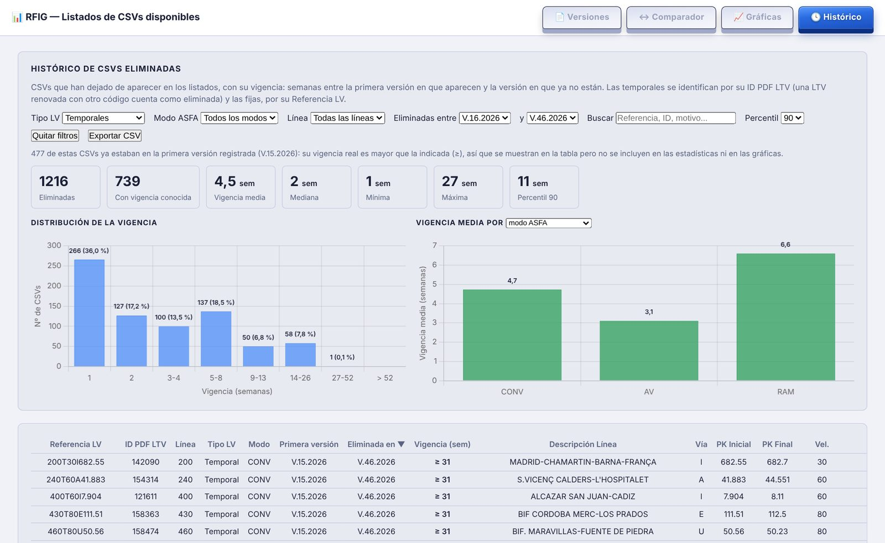
Filtros
| Tipo LV | Por defecto, temporales. |
| Modo ASFA y Línea | Solo ofrecen las opciones con CSVs eliminadas del Tipo LV elegido. |
| Eliminadas entre ... y ... | Versiones entre las que se eliminaron las CSVs. |
| Buscar | Por referencia, ID PDF LTV o motivo. |
| Percentil | Elige qué percentil se muestra en su tarjeta (de 50 a 99; por defecto, 90). |
| Quitar filtros | Vuelve a la vista inicial. |
Estadísticas y gráficas
| Tarjetas | Número de CSVs eliminadas, cuántas de ellas tienen vigencia conocida (las que entran en las estadísticas) y vigencia media, mediana, mínima, máxima y el percentil elegido, en semanas. El percentil N es la vigencia que no supera el N % de las CSVs; por ejemplo, un percentil 90 de 11 semanas indica que 9 de cada 10 CSVs estuvieron vigentes 11 semanas o menos. |
| Distribución de la vigencia | Número de CSVs eliminadas por tramos de vigencia. Encima de cada barra se indica el número de CSVs y, entre paréntesis, su porcentaje sobre el total de CSVs con vigencia conocida. |
| Vigencia media por | Agrupa por modo ASFA, línea, motivo o versión de eliminación. Al pasar el ratón se ven la mediana y el número de CSVs de cada grupo. Por línea y por motivo se muestran los 25 grupos con más CSVs. |
Tabla
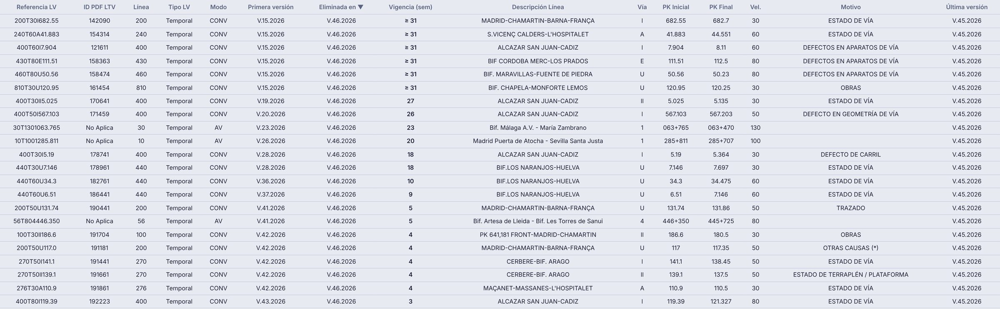
Una fila por CSV eliminada. Las primeras columnas son las de identificación (referencia, ID PDF LTV, línea, tipo y modo), seguidas de la primera versión en que aparece, la versión en que se eliminó y su vigencia en semanas; después vienen la descripción de la línea, la vía, los PK, la velocidad, el motivo y la última versión en que aparece. Si la ventana del navegador es estrecha, a estas últimas columnas se llega desplazando la tabla hacia la derecha. Pulse la cabecera de una columna para ordenar por ella; un segundo clic invierte el orden. Exportar CSV descarga las filas filtradas en un fichero que se abre en Excel.
Cómo se calcula
| Identificación | Las CSVs temporales se identifican por su ID PDF LTV. Una LTV renovada con otro código cuenta como eliminada, y la nueva empieza su propia vigencia. Las fijas se identifican por su Referencia LV. Si una CSV desaparece y vuelve a aparecer, cada periodo cuenta por separado. |
| Vigencia incompleta (≥) | Las CSVs que ya estaban en la primera versión registrada llevaban vigentes desde antes, así que su vigencia real es desconocida y mayor que la calculada. Se muestran en la tabla marcadas con «≥», pero no se incluyen en las estadísticas ni en las gráficas. |
| Precisión | La vigencia se mide entre versiones publicadas, con una precisión de una semana. Cuando faltan semanas publicadas, la eliminación se sitúa en la primera versión publicada en la que ya no aparece la CSV. |
6. Página de cada semana
Se abre con el botón Abrir de la pestaña Versiones. Muestra el listado completo de CSVs de esa versión, que se indica arriba a la derecha.
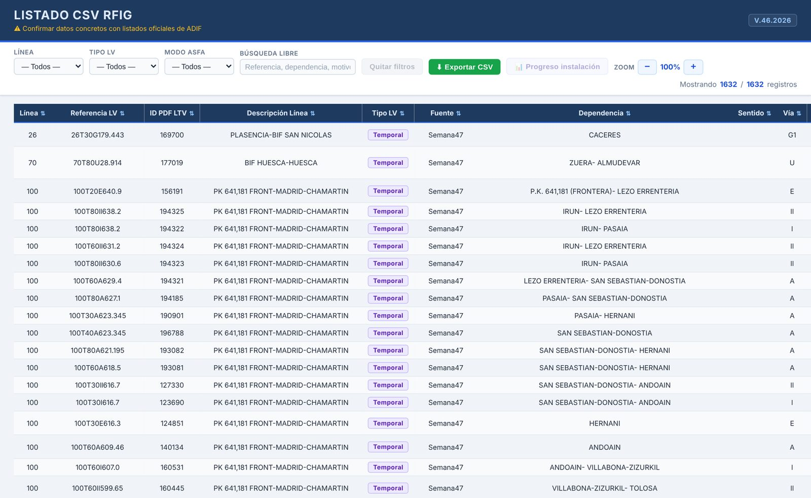
Filtros y búsqueda
| Línea, Tipo LV y Modo ASFA | Desplegables para filtrar el listado. |
| Búsqueda libre | Busca el texto escrito en cualquier columna (referencia, dependencia, motivo...). |
| Quitar filtros | Restablece los filtros y la búsqueda. |
| Mostrando N / M registros | A la derecha, el número de CSVs que cumplen los filtros sobre el total. |
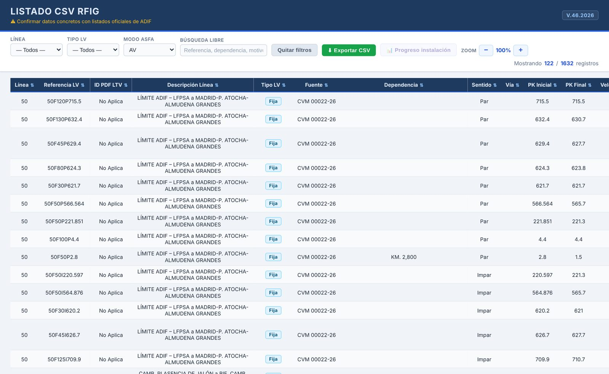
Otras opciones
| Ordenar | Pulse la cabecera de una columna para ordenar por ella; un segundo clic invierte el orden. |
| Zoom | Los botones − y + reducen o amplían el tamaño de la tabla. |
| Exportar CSV | Descarga las filas filtradas en un fichero que se abre en Excel. |
Ventana de instalación
Al pulsar sobre una fila se abre la ventana de instalación de esa CSV, con los datos que constan en el fichero de seguimiento de la instalación: número de parejas y tipo de balizas y, para cada pareja (hasta cuatro), el PK y el número de serie de cada baliza. También incluye el fabricante, la fecha de instalación, las hojas de control, la fecha de puesta en servicio y las observaciones. Se cierra con la ✕, pulsando fuera de ella o con la tecla Esc.
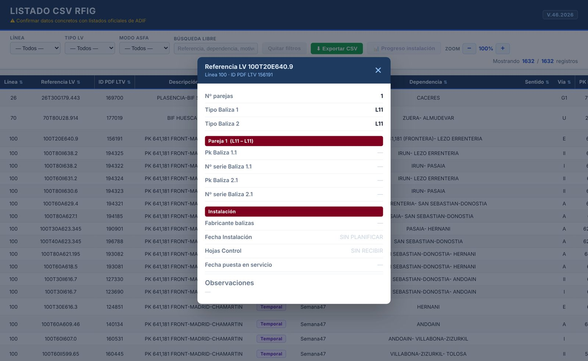
En el listado, la columna Secuencia de Balizas se colorea en verde oscuro si la instalación de la CSV está completa y en granate si falta algún dato. La instalación está completa cuando todos los campos de instalación están rellenos; la fecha de instalación no cuenta si pone «SIN PLANIFICAR», ni las hojas de control si ponen «SIN RECIBIR».
Progreso de la instalación
El botón Progreso instalación muestra, para las CSVs que cumplen los filtros aplicados, el número total de CSVs y el porcentaje de instalaciones completas y pendientes. Combinado con los filtros, permite seguir el avance por línea, tipo o modo.
El botón solo se habilita cuando hay al menos una instalación completa entre las CSVs filtradas. En la versión V.46.2026 todavía no hay ninguna, por lo que aparece deshabilitado en las capturas.
7. Consejos y problemas habituales
| Situación | Qué hacer |
|---|---|
| No aparece la última versión | La web puede tardar uno o dos minutos en actualizarse tras la publicación. Recargue la página con Ctrl+F5. |
| El Comparador muestra «Cargando comparaciones...» | Es normal durante unos segundos la primera vez: los datos de las comparaciones van comprimidos y el navegador los prepara al abrir el comparador. |
| «Este navegador no puede abrir las comparaciones» | Use una versión actual de Edge, Chrome o Firefox. |
| Las gráficas no se dibujan | Las gráficas necesitan conexión a internet para cargar sus librerías. Compruebe la conexión y recargue la página. |
| El botón «Progreso instalación» está deshabilitado | No hay instalaciones completas entre las CSVs filtradas. Quite filtros o complete los datos de instalación en el fichero de seguimiento. |
| Las cifras del Comparador y de la gráfica de evolución parecen no cuadrar | Ambas cuentan filas del listado y deben coincidir: compruebe que los filtros de Tipo LV, modo y línea son los mismos. |
| Las CSVs eliminadas del Histórico no coinciden con las bajas de las gráficas | El Histórico identifica las temporales por su ID PDF LTV, así que cuenta como eliminada una LTV renovada con otro código; las gráficas comparan por Referencia LV. |